<div class="middle center"> <div style="width: 100%"> # 习题讲解 <hr/> By [胥涵坤](https://xiu-zju.me) </div> </div> Note: 大家好，我是胥涵坤，今天我给大家带来的展示是关于计算机视觉在无人驾驶汽车控制论当中的应用。 <!--s--> <div class="middle center"> <div style="width: 100%"> # 3.27 3.32 4.9 4.11 4.16 </div> </div> Note: <!--v--> ## 3.27 <center> 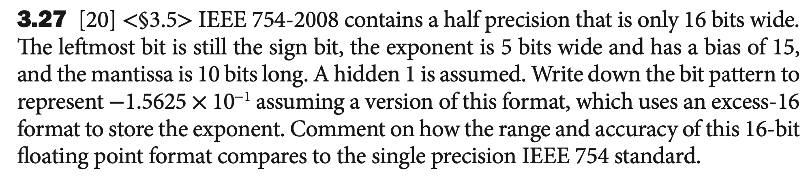 </center> 符号位：1位 指数位：5位 尾数：10位 偏移量： $ \text{bias} = 2^{n-1} - 1 =15$ <!--v--> ## 3.27 $$(-1)^S \cdot (1 + \text{fraction}) \cdot 2^{\text{exponent}-\text{bias}}$$ $$−1.5625 × 10^{−1} = − 0.15625 × 10^0 = − 0.00101 × 2^0$$ $$=−1.01 × 2^{−3} = (-1)^1 \cdot (1 + 0.01) \cdot 2^{12-15} $$ 带入各个部分，我们可以得到答案： $$ 1\text{ } 01100\text{ }0100000000 $$ 关于精度和表示范围，**增加尾数位数的大小可以提高小数精度，增加指数位数可以增加数的表示范围。**单精度浮点数的指数位数是8位，尾数位数为23位，均大于此16-bit表示方法。 Note: 在无人驾驶汽车的整个控制系统中，**传感系统**起到了不可或缺的作用。从下面的图可以看出，传感系统负责实时接收车辆周围的环境信息，包括道路状况、行人、其他车辆及障碍物等，然后为决策系统提供准确的数据支持，从而保障行车安全和驾驶效率。 <!--v--> ## 3.32 <center> 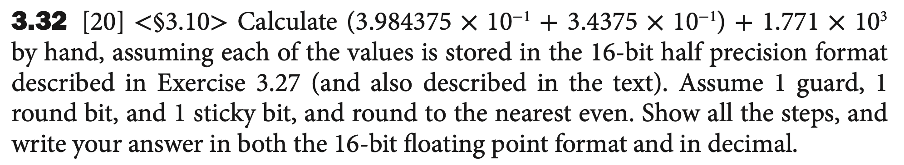 </center> $$3.984375 × 10^{−1} = 1.1001100000 × 2^{−2}$$ $$3.4375 × 10^{−1} = 1.0110000000 × 2^{−2}$$ $$1.771 × 10^3 = 1771 = 1.1011101011 × 2^{10}$$ <!--v--> ## 3.32 - 第一步加法 进行下四个操作： 1. Alignment 无需 2. Addiction Fraction $$ 1.1001100000 + 1.0110000000 = 10.1111100000 $$ 3. Normalization $1.0111110000 × 2^{-1}$ 4. Rounding 无需 <!--v--> ## 3.32 - 第二步加法 进行下四个操作： 1. Alignment 将小指数对齐到大指数 $$ 1.0111110000 × 2^{-1} = 0.0000000000\text{ }10\text{ }111110000 × 2^{10}$$ 2. Addiction Fraction $$ 1.1011101011 + 0.0000000000 = 1.1011101011 $$ 此时，guard=1，round=0，sticky=1 <!--v--> ## 3.32 3. Normalization $$1.1011101011\text{ }10 × 2^{10}$$ 4. Rounding 由于guard=1，round=0，所以靠着sticky bit来决定如何取舍。此处sticy bit=1，所以要进一。得到： $$1.1011101100 × 2^{10} = 11011101100 = 1772$$ <!--v--> ## 3.32 <center> 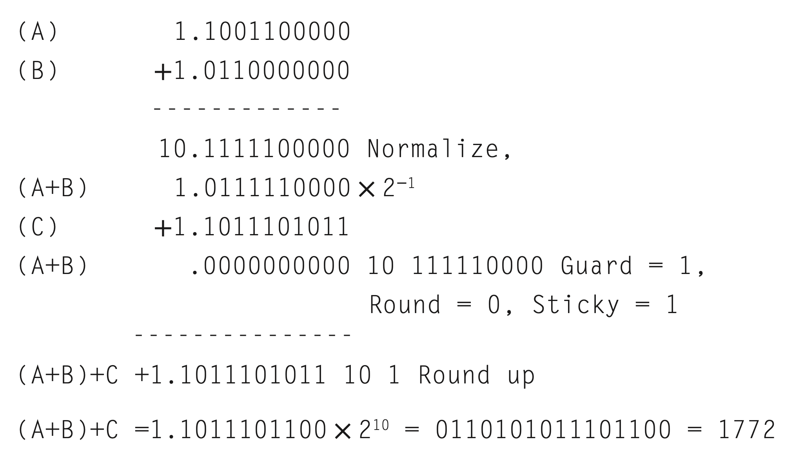 </center> <!--v--> ## 4.9 <center> 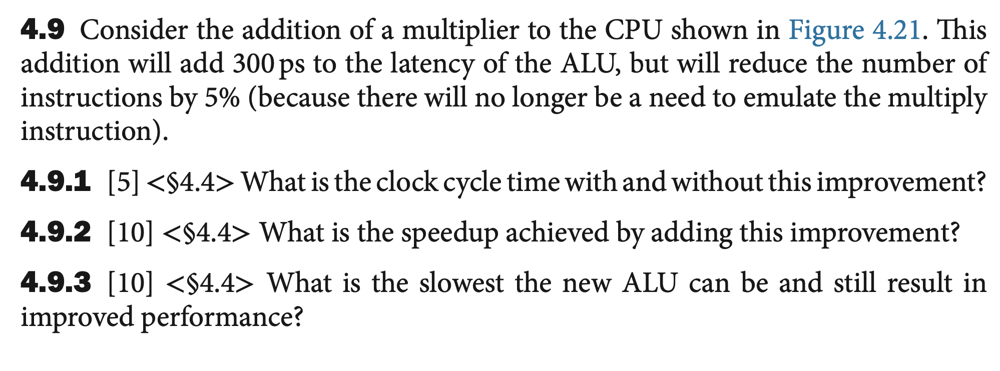 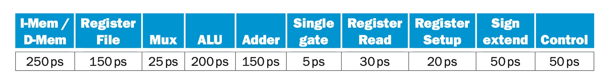 </center> <!--v--> ## 4.9 <center> 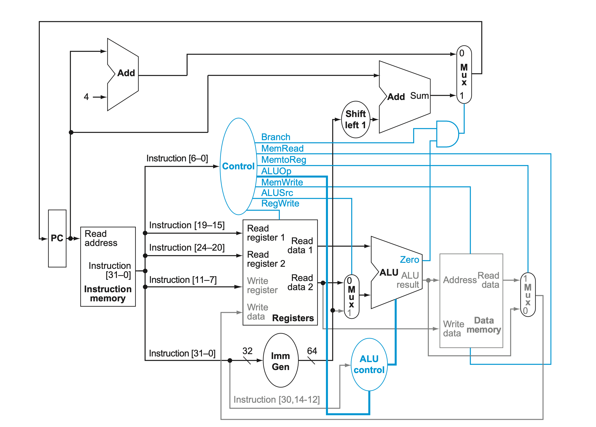 </center> <!--v--> ## 4.9.1 <center> 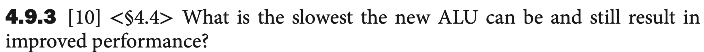 </center> According to 4.7: without: 950 ps with: 950 + 300 = 1250 ps <!--v--> ## 4.9.2 <center> 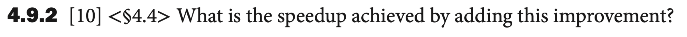 </center> Assume that there $ n $ instructions: $$\text{CPU-time-1} = 950 \cdot n $$ $$ \text{CPU-time-2} = 1250 \cdot (n \cdot 0.95) $$ $$ratio = \frac{\text{CPU-time-2}}{\text{CPU-time-1}} = 0.8 $$ <!--v--> ## 4.9.3 <center> 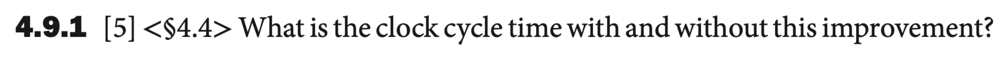 </center> 在仅针对ALU考虑的情况下： Instruction count = $0.95 \cdot n$ $$\frac{950 \text{ps}}{0.95} = 1000 \text{ps}$$ So the time for ALU increased from 200ps to 250 ps. $$f = \frac{1}{250\text{ps}} = 4 \text{GHz}$$ <!--v--> ## 4.11 <center> 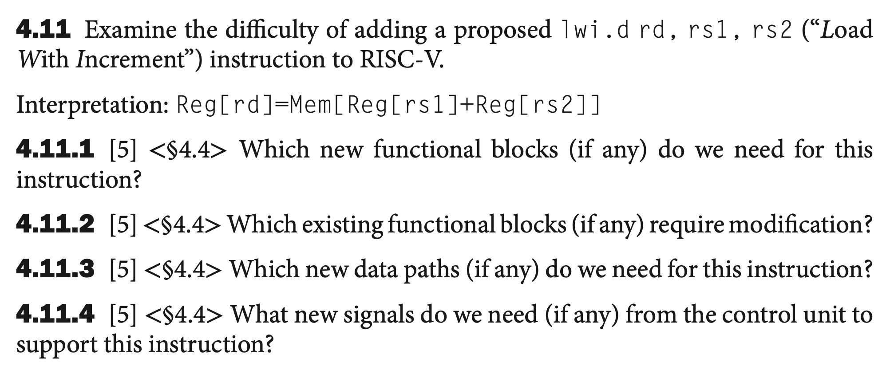 </center> <!--v--> <center> 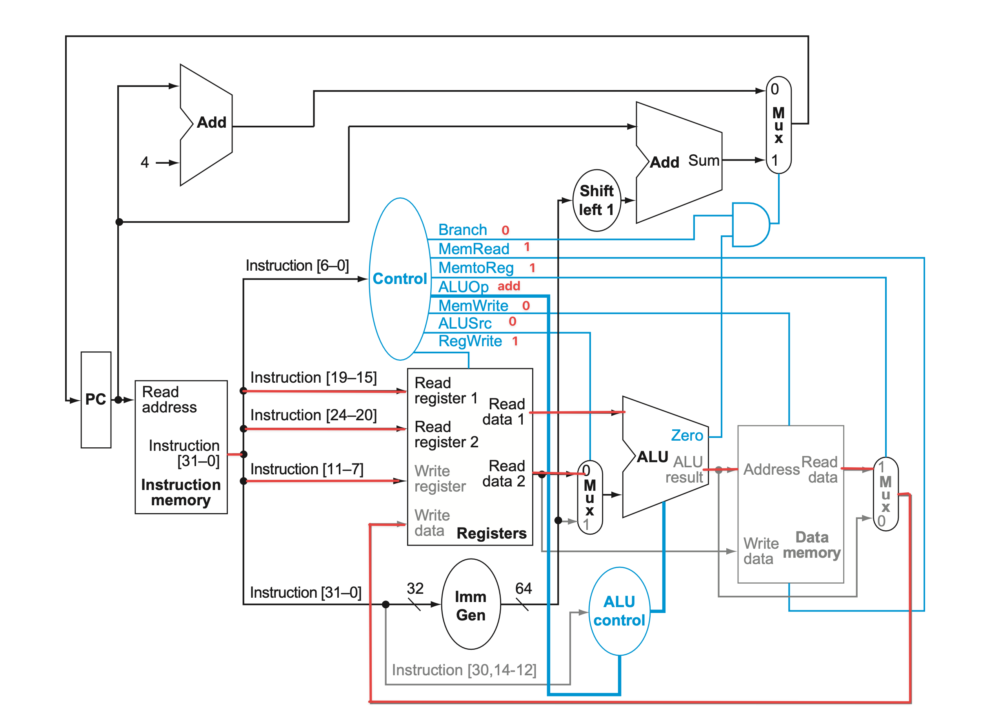 </center> <!--v--> ## 4.11.1 <center> 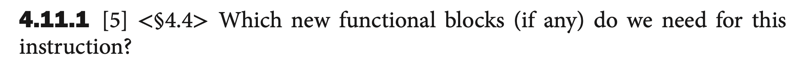 </center> No need. <!--v--> ## 4.11.2 <center> 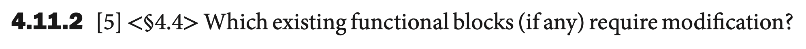 </center> Only the control unit needs modification. <!--v--> ## 4.11.3 <center> 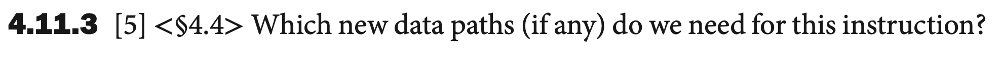 </center> No need. <!--v--> ## 4.11.4 <center> 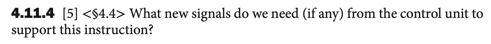 </center> No need. <!--v--> ## 4.16 <center> 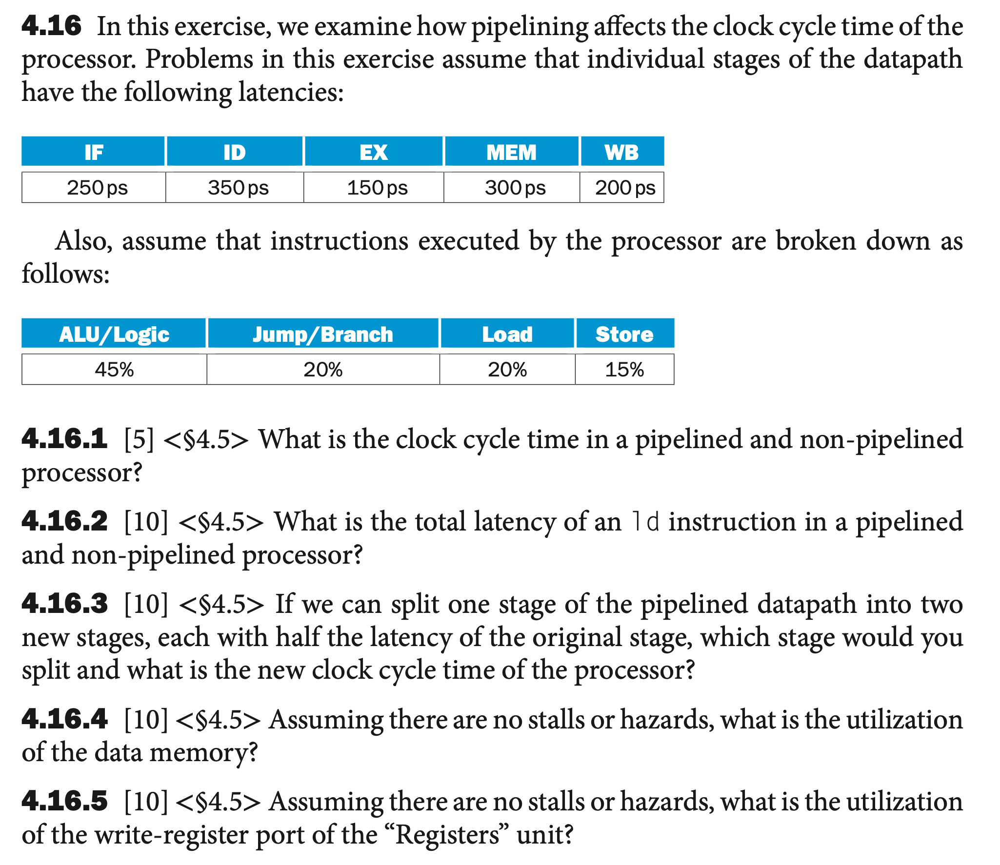 </center> <!--v--> ## 4.16 <center> 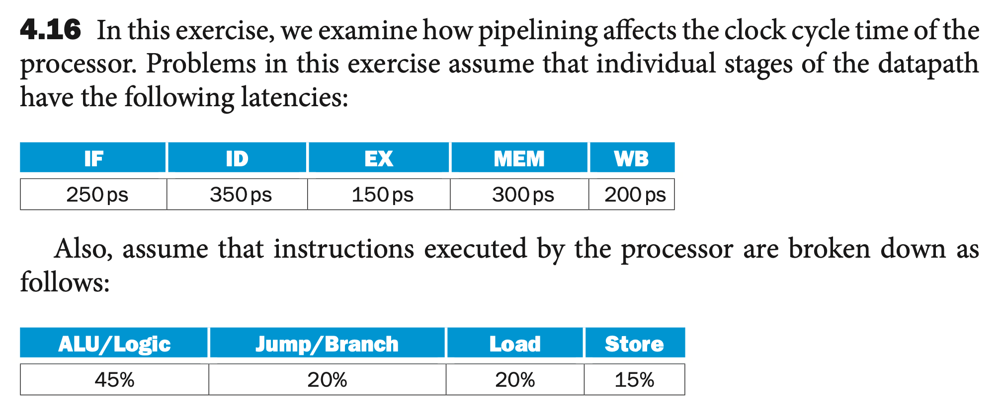 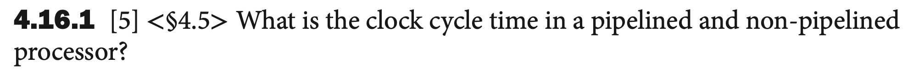 </center> Pipelined: Max of {250,350,150,300,200} = 350ps Non-pipelined: Sum of {250,350,150,300,200} = 1250ps <!--v--> ## 4.16 <center> 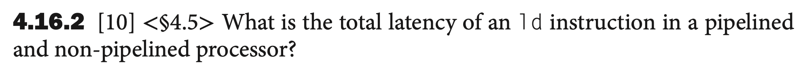 </center> Pipelined: Sum of {250,350,150,300,200} = 1250ps Non-pipelined: Sum of {250,350,150,300,200} = 1250ps <!--v--> ## 4.16 <center> 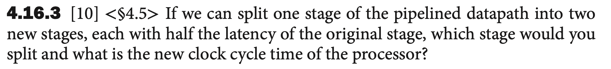 </center> 当然是分裂最大的ID。 Pipelined: Max of {250,175,175,150,300,200} = 300ps <!--v--> ## 4.16 <center> 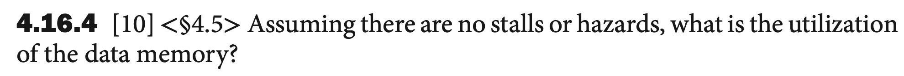 </center> The utilization of the data memory: Store and Load. 20% + 15% = 35% <!--v--> ## 4.16 <center> 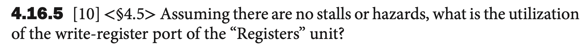 </center> The utilization of the write-register port of the “Registers” unit: ALU/logic and Load. 45% + 20% = 65%